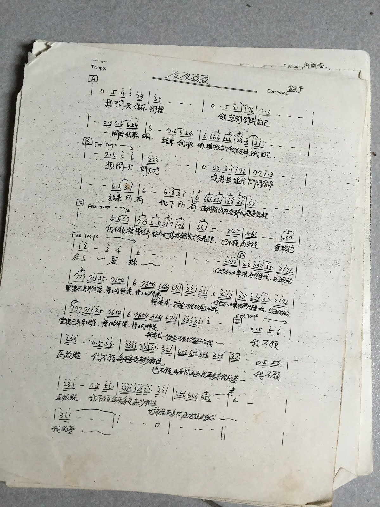
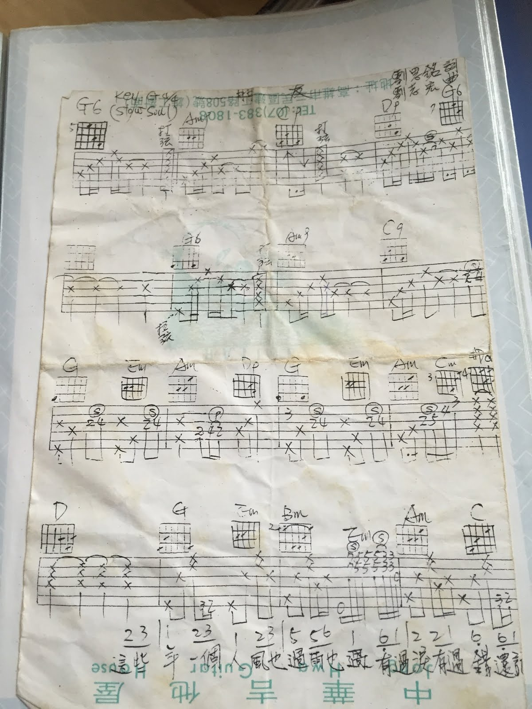
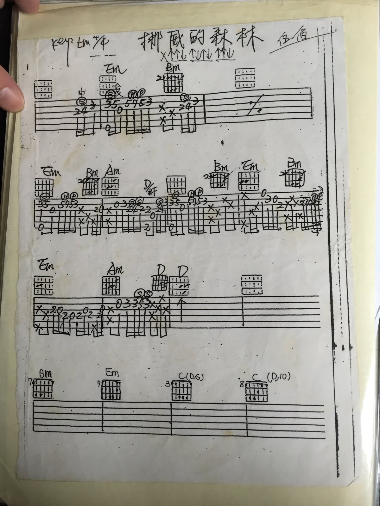
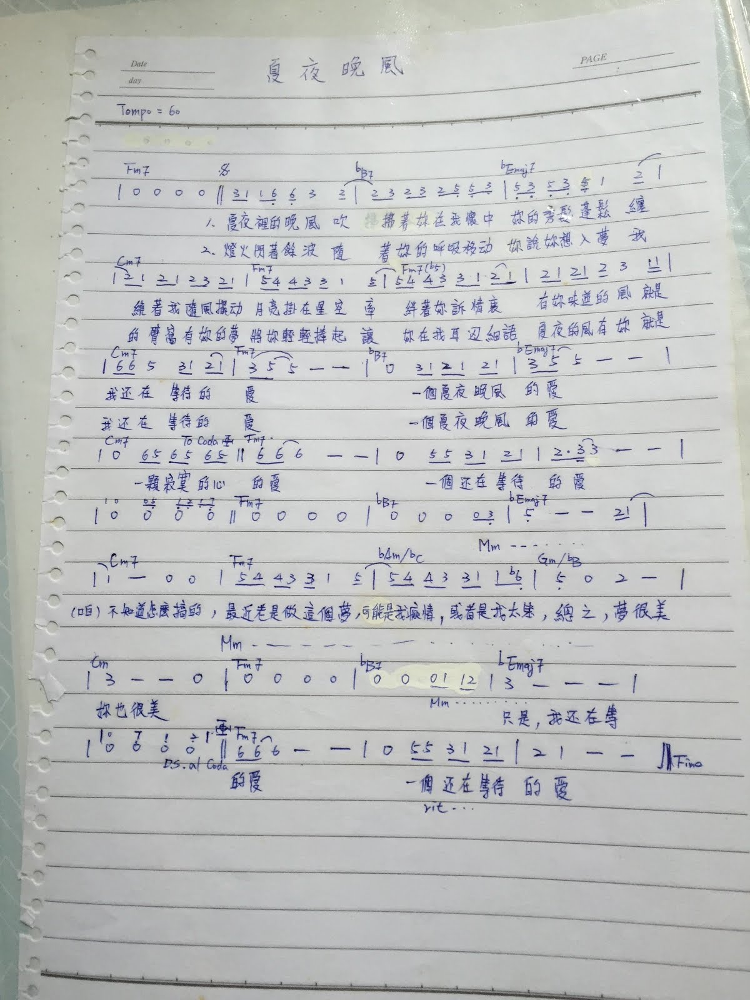
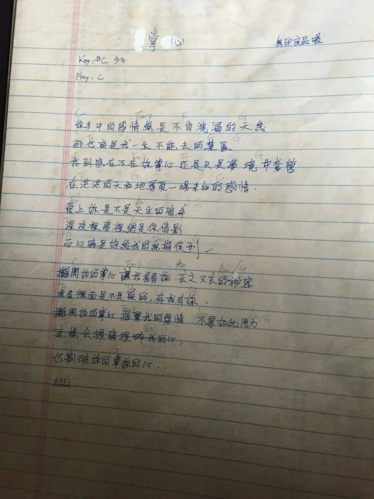
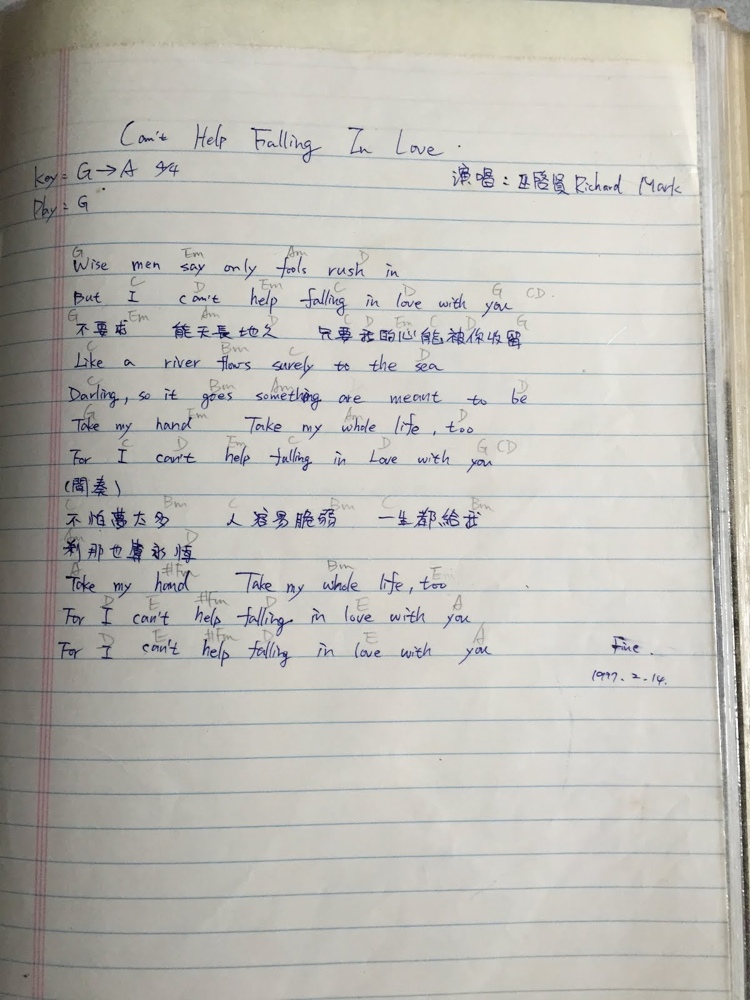
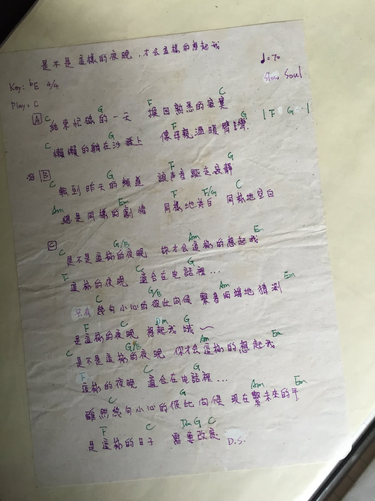

過年，想找的就只是回憶而已：那些年練過的流行歌曲
發布日期：2016-02-12
過年回家整理東西，這時候都很容易翻出一堆回憶，特別是以前練過的曲子。
以前不像現在網路資訊這麼發達，很容易就可以 google 或者到論壇找到免費的樂譜。所以以前每一首歌的譜，從獲得到練習的過程，都是很珍惜的。現在回去翻那些歌曲，當年練習時的感覺，雖然只是一些簡單的和弦和指法，但是感覺卻是那樣的深刻，直到現在都歷歷在目。
用手機隨手拍了一些以前的譜，有些是「鏘」來的，有些則是自己練習採譜後手寫紀錄的。這些每一首歌，都有一段記憶，背後可能是一段故事。這些譜一筆一畫的字跡，比起網路上隨意 google 來的譜，更是珍貴。
天王天后
阿妹 張惠妹
剛學吉他的時候，張惠妹出道。她的經典歌曲是大家都追著練的。那時候最喜歡的就是 聽海 和 簡愛 這兩首。聽海也是我第一次用 Keyboard 表演的曲子之一。

沒記錯簡愛是第二張專輯的 B 面的一首？但我老是喜歡這種卡帶 B 面的歌曲。這首曲子旋律很美，歌詞當時聽不懂。然後那時不知道修啥課，老師要我們去看經典文學小說 簡愛，我就不自覺地把這兩個聯想在一起，雖然後來小說也沒看完 XD
那時候也剛開始在玩 MIDI 編曲，正在自己學著練鍵盤。後來在網路開始流行了，在蒐集 MIDI 作品的網站，認識一個編曲高手，他編了這首曲子，我很多編曲技巧以及鋼琴的手法，都是從這首學來的。

熊天平 + 許茹芸
熊天平和許茹芸也是我剛開始學吉他時紅的，他們每張專輯在當時都有不錯的銷售。同時期的許茹芸的芸式唱腔搭配的對唱曲。另外熊天平也出了一張個人的吉他演奏專輯，找來知名的錄音室吉他手江建民合作。
這首 你的眼睛 是當時很紅的歌曲，正在學琴的時候，練習採譜必要的曲子。

夜夜夜夜 這首歌，大部分的人熟知的應該都是情歌王子齊秦的版本，以及後來 梁靜茹首場演唱會 翻唱的版本，不過我比較熟的卻是熊天平的版本。照片是當時 熊天平火柴天堂 Demo 原創專輯附贈的吉他和弦譜。

歌神 張學友
那時候社團有個學長歌聲很像張學友，只要他一唱歌所有的女同學就圍過來了，我就是幫忙伴奏的那個人，所以練了很多當時張學友的主打歌。

這首情書是 1995 日本電影 情書 的中文主題曲。那時候我其實不是很喜歡這首歌 （但很喜歡電影以及原聲帶的配樂，還有買原版 VCD），但是那時候很紅，學長又喜歡唱，加上那時候能彈這首歌的前奏在社團裡是個指標，所以硬是把他練起來 …

數字歌「一千個傷心的理由」，映像最深刻的就是那段利用迴旋技巧的前奏，其他全忘了 XD
譜上的有兩個調，那時候我還不知道那叫做轉調，只知道加幾個半音，就可以變成另一組和弦彈一樣的歌曲。曲名上面記錄那時候伴奏琴的節奏形態編號。

國民歌王 周華健
國民歌王的愛相隨那時候剛出來時，大家搶著「抓歌」。然後那時候歌聲像張學友的那個學長，也超愛唱，所以我也就幫他伴奏了 XD

超級國民歌「朋友」，迎新晚會我擔任 keyboard 彈這首。

台灣 Pub King: 伍佰 & China Blues
伍佰的歌就多了， 這篇 「2014 伍佰無盡閃亮的高雄小巨蛋演唱會 - 觀後感 + 聊聊記憶中的伍佰」有很多過去的記憶。





其他
動力火車
動力火車他們剛出道時，找了一群資深的搖滾咖幫忙做唱片，編曲的手法都是很「80 Rock」的，我有好多編曲手法都從他們的歌「偷」來的。那時候比較常聽的像是 明天的明天的明天的（大後天）、不甘心不放手、當 … 很多。
這首 厚重的記憶 不知道哪一張專輯 B 面最後一首，一把吉他伴奏而已。很喜歡這首曲子的詞，後來透過同學凹到一手的譜，不過他需要調弦，我很懶就自己改成不要調的 XD

重唱二人組 無印良品
同樣的也是愛唱歌的學長要的 …. 所以有個愛唱歌的學長，會讓你練了很多莫名其妙的歌 XD

優客李林
優客李林的成名曲 認錯。
喜歡聽這首歌是因為有一年擔任學生組織的燈光組，負責晚會燈光支援，常常整天公假，在大禮堂依據需求單位，負責晚會燈光的設計、搭配、佈線、測試等。那時候經常和音響組整天窩在禮堂工作，工作時音響組都會播放優客李林的精選輯，聽著聽著，就幹脆練這首最好聽的。
這首歌的鋼琴伴奏手法、音色，都是後來我編曲的參考指標之一，歌曲的間奏電吉他 Solo，也是剛開始學電吉他時，試著練過的，雖然那時根本練不起來 XD

Richard Marx
這首 Can’t help falling in love 巫啟賢和 Richard Marx 合唱的版本，不知道是巫啟賢在哪張專輯裡的現場錄音。那時候情歌王子 Richard Marx 三首比較知名的經典情歌：Can’t help falling in love, Right Here Waiting, Now and Forever … 最喜歡的還是這首。比較特別的是，這首有一段是填中文詞。

吳宗憲
Local King 吳宗憲 的成名曲之一：是不是這樣的夜晚，你才會這樣的想起我。他還有好多首好聽的歌，不過歌聲跟他的臉對不太起來就對了 XD。

題外話
看到這裡，這些記憶大多是當時的主打歌，然後有很多的副歌、甚至是整首的和弦進行都是一樣的。
那年代專輯的幕後製作，大概都是：
- 詞曲：陳樂融
- 編曲：屠穎、陳致遠、涂惠源
- 吉他：倪方來、江建民
後記
去年有一天下班在等公車時，遇到一個同事剛好經過。那時候我戴著耳機，正在聽的歌是 Michiya Haruhata - Night Jewels，他知道我在彈吉他，打招呼之後就好奇地拿了我的耳機，聽聽我在聽啥。結果他聽了大概不到一小節，就用『你都聽這種東西喔？』的眼神看著我。當然，這不是第一次。
當兵的時候，那時候手機還不能聽音樂，MP3 隨身聽也還不流行，我都會把自己喜歡的音樂，燒成 CD 帶去營區用電腦聽。有次我在弄公文（菜鳥），在旁邊的學長很無聊，就翻我的 CD 包，看到一張上面寫『抒情歌』，就很高興得放到電腦聽，結果第一首真的很抒情，是 Steve Vai 的 For The Love Of God。。。（抒情歌沒錯啊XD）那時候學長的表情也是『你都聽這種東西喔？』
可能有朋友覺得玩團的、彈電吉他好像都只彈、聽一些國外的歌曲，其實不然。每個人成長的環境，是影響很大的。『閃靈』的創作，是源自 Freddy 的成長背景，造就他想要寫那樣的曲子；盧廣仲之所以會寫出那樣的曲子，也是因為他的 成長背景 就有那些元素在生活當中。我的學習背景很單純，只是喜歡音樂，那時候的環境，能接觸的有限，資訊來源更是少。所以不管在社團裡接觸到啥，吃得下幾乎都來者不拒，包含古典樂。
一直到專科快畢業時，因為認識當時以 Cover X-Japan 聞名的『第七樂章』樂團，聽了很多 X-Japan 的故事，也接觸了 X-Japan 的歌曲，才發現原來音樂世界還有另一片天。所以後來跟學長一起想成立熱音社，雖然後來因為要畢業而不了了之。
學電吉他之後，發現，原來不是只有鋼琴才能『獨奏』，不是只有小提琴才能彈主旋律，世界上有很多音樂是豐富且精彩的。從此開始廣泛地聽各式各樣的音樂，特別是電吉他演奏的曲子。
隨著年紀越來越大，感受力不像年輕時那麼的靈敏，有時候聽到很不錯的曲子，但是卻沒感覺，保鮮期也很短，可能過沒多久就被放到 永久記憶區 (Long Term Memory) 了，除非跟什麼事情、事件、故事連結在一起，否則很多很不錯的音樂，往往就過往雲煙了。
關於『感受力』，上了年紀之後，漸漸知道失去感受力的無力感。我一直很喜歡日劇王牌大律師 2 EP7 裡的一段對白，那是一個漫畫家老師傅和徒弟在法庭上的對話：
老師傅：「才能這種東西，本來就是該靠自己挖掘創造的！我也不是什麼天才，我只是比任何人都拼命工作，一步一腳印走過來了。等我回頭一看，背後沒有一個身影，那幫懶惰的人在山腳念叨著『誰叫那傢伙是天才』，開什麼玩笑，我最討厭悠哉悠哉地長大的慢性子！比我有時間、有精力、情感豐富的人，為什麼比我懶惰？那就給我啊，要把這些東西都浪費掉的話，就通通都給我，我還有很多很多想創造的東西，給我啊！但是，穗積」導演語調一轉，說：「你要是那麼想讓我道歉，我就道歉，想要錢，我就給你錢。」
這段對白，讓我更深刻地感覺到：「大部分人努力程度之低，根本輪不到拼天賦」這篇文章所描述的。有時候覺得自己很努力了，但看到這些文章，又覺得根本不值一提。
而記憶中很多歌曲，很多旋律，隨著歲月的增加，經歷了各式各樣的人事物之後，沉積在心裡深處的曲子，漸漸地遺忘了。有時候會因為聽廣播，或者在一些場合聽到一段彷彿熟悉的旋律，但卻又想不起曲名，只記得一些感覺，或者曾經經歷過的事件。
有個電視節目，邀請一些藝人拿自己的東西出來拍賣，然後現場請人估價。很多人拿出來賣的大多都是寶石、古董之類的，不知道是僅雯還是琇琴拿了一本以前走唱時的樂譜，那是他最珍貴的記憶，現場其他人也點頭說是，但卻是面無表情。那時候我心裡就很有共鳴，然後看到其他人的表情，不難想像，因為沒有同樣經歷的人，是很難感受的。
二零一二年三月我換工作，加入 Startup 之後到現在，工作心態跟以往差很多，大部份的精神都放在工作上的經營，放在音樂的時間少了很多。常常是下了班很累，拿起吉他，卻不知道要彈啥東西，或者打開 iTunes 也不知道要聽什麼 …
這次過年回老家，整理以前的東西，翻出一些過去的足跡，觸動了 核心記憶 (Core Memory) ，突然間想起很多事情，這短暫的停留讓自己有機會重新思考『初衷』，就像漫畫海賊王的主角 - 魯夫當時為啥出海一樣。
延伸閱讀
站內資料
- 那些年練過的古典吉他歌曲
- 2014 伍佰無盡閃亮的高雄小巨蛋演唱會 - 觀後感 + 聊聊記憶中的伍佰
- 現實與理想的掙扎
參考資料
更新紀錄
- 原文位址：https://rickmidi.blogspot.com/2016/02/blog-post_12.html
- 2016/02/12: 初版